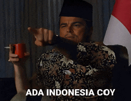

Macam-macam Font Populer
1. Times New Roman
Times pertama kali diciptakan oleh Stanley Morison dan Monotype Corporation untuk keperluan publikasi majalah The Times. Tampilan terbarunya mulai digunakan pada tahun 1972. Kemudian, kehadiran Microsoft Word membuat font ini dikenal secara global. Karena termasuk dalam format Opentype (OTF), font ini bebas digunakan dan dapat dikembangkan kembali sesuai kebutuhan

2. Minion
Minion adalah font elegan yang pertama kali dirilis sebagai webfont orisinal oleh Adobe pada tahun 1990. Dirancang oleh Robert Slimbach, font ini mengambil inspirasi dari gaya tipografi Renaisans akhir dan dibuat khusus untuk kenyamanan membaca teks panjang. Meski bergaya klasik, desainnya agak ramping dan memiliki bukaan huruf lebar agar lebih mudah dibaca.

3. Georgia
Matthew Carter merancang font ini pada tahun 1983 untuk Microsoft Corporation, dan kini font tersebut dapat diakses secara gratis melalui Google Fonts. Gaya hurufnya mengadaptasi estetika Scotch Roman yang populer di abad ke-19. Font ini awalnya bernama Miller, namun namanya diubah menjadi Georgia sebagai lelucon yang terinspirasi dari berita tabloid yang menyebutkan “Penemuan kepala alien di Georgia"

4. Franklin Gothic
Franklin Gothic, bersama dengan font grotesque lainnya, terkenal berkat penggunaannya dalam dunia desain industri. Font ini menjadi salah satu rilisan terpopuler dari American Type Founders sepanjang abad ke-20. Karena tampilannya yang minimalis, modern, dan fleksibel, Franklin Gothic sering dipakai untuk judul di media cetak seperti koran dan majalah, serta diaplikasikan dalam desain iklan

5. Futura
Font Futura lahir dari pengaruh gerakan Bauhaus di abad ke-20, dengan desain yang mengandalkan bentuk-bentuk geometris tegas, terutama lingkaran. Jenis huruf ini menawarkan beragam simbol dan mendukung banyak bahasa, termasuk versi Cyrillic. Hal ini menjadikannya sangat populer di negara-negara Slavia selama era 1990-an

6. Helvetica
Helvetica merupakan salah satu tipografi paling dikenal dan paling luas penggunaannya secara global. Keunggulan utamanya terletak pada bentuk huruf yang bersih, presisi visual, serta tingkat keterbacaan yang tinggi. Helvetica juga dikategorikan sebagai keluarga huruf besar yang mencakup 22 varian berbeda, meliputi berbagai berat, gaya cetak tebal, miring, dan kombinasi lainnya, menjadikannya sangat fleksibel dalam berbagai konteks desain.

7. Bodoni
Bodoni merupakan hasil karya Gianbattista Bodoni, seorang tokoh penting dalam sejarah tipografi yang pada masanya dijuluki sebagai “Raja Para Pencetak.” Meskipun Bodoni menciptakan banyak jenis huruf, tipografi yang menyandang namanya menjadi karya paling berpengaruh dan bertahan paling lama dibandingkan karya-karya lainnya

8. Monstserrat
Tipografi Montserrat memiliki akar historis yang kuat dalam konteks arsitektur dan desain urban. Dirancang dengan mengacu pada lingkungan Montserrat di Buenos Aires, jenis huruf ini mengambil inspirasi dari estetika bangunan dan poster-poster ikonik yang mendominasi lanskap visual kota tersebut pada abad ke-20. Proyek ini dimaksudkan sebagai bentuk pelestarian warisan tipografi urban yang semakin terpinggirkan akibat perkembangan modernisasi kota

9. Frutiger
Frutiger, yang dinamai sesuai dengan nama perancangnya, Adrian Frutiger, merupakan tipe sans-serif geometris dengan pendekatan humanis. Font ini dikenal luas karena fleksibilitasnya yang tinggi dalam berbagai konteks desain dan aplikasinya yang konsisten dalam memastikan keterbacaan optimal

10. News Gothic
News Gothic merupakan jenis huruf sans-serif yang sering dibandingkan dengan Franklin Gothic karena kesamaan visualnya. Namun, keduanya merupakan entitas desain yang berbeda; News Gothic dirancang secara independen oleh Morris Fuller Benton untuk American Type Founders (ATF). Sepanjang abad ke-20, font ini memainkan peran penting dalam dunia penerbitan, khususnya sebagai elemen tipografi utama dalam surat kabar dan majalah. Selain itu, News Gothic juga secara luas diadopsi dalam teknologi hot metal typesetting, terutama melalui penggunaan pada mesin Intertype, yang menjadikannya bagian integral dari proses produksi cetak pada masa itu.

Format Gambar Populer
1. Join Photogenic Experts Group (JPEG atau JPG)
JPEG (atau JPG) merupakan format file gambar raster yang menerapkan teknik kompresi lossy. Pendekatan ini memungkinkan efisiensi dalam penyimpanan dan distribusi data visual karena ukuran file menjadi lebih kecil. Namun, kompresi jenis ini juga menyebabkan degradasi kualitas gambar, karena sebagian data visual hilang dalam proses tersebut.

2. Portable Network Graphic(PNG)
PNG merupakan format grafis raster yang menggunakan kompresi lossless, sehingga mampu mempertahankan detail serta kontras warna secara optimal. Salah satu keunggulan utama dari format ini adalah kemampuannya dalam menjaga keterbacaan teks jauh lebih baik dibandingkan JPEG. Oleh karena itu, PNG sering menjadi pilihan utama dalam pembuatan materi visual seperti infografis, banner, tangkapan layar, dan jenis grafik lainnya yang menggabungkan elemen gambar dan teks.

3. Graphic Interchange Format (GIF)
GIF (Graphics Interchange Format) merupakan salah satu format gambar raster yang menerapkan kompresi lossless, memungkinkan gambar dikompresi tanpa kehilangan data. Meskipun demikian, format ini memiliki keterbatasan pada kedalaman warna, yaitu hanya mendukung hingga 8 bit per piksel dengan maksimum 256 warna dalam satu gambar.
4. WebP
WebP merupakan format gambar digital yang dirancang untuk meningkatkan efisiensi kompresi baik dalam bentuk lossy maupun lossless. Format ini dikembangkan untuk mengoptimalkan penggunaan sumber daya, khususnya dalam konteks web dan aplikasi berbasis internet.

5. Tagged Image File Format(TIFF)
TIFF (Tagged Image File Format) adalah salah satu format gambar raster yang secara luas digunakan dalam lingkungan profesional, khususnya untuk keperluan penyimpanan dan pengolahan gambar yang akan dicetak. Walaupun format ini mendukung kompresi lossy, penggunaannya lebih umum dalam bentuk lossless guna menjaga kualitas gambar secara maksimal. Dalam praktiknya, aplikasi desain grafis profesional seperti Adobe Photoshop dan Illustrator umumnya tidak menerapkan kompresi pada file TIFF. Akibatnya, gambar dalam format ini cenderung memiliki ukuran file yang besar, namun sangat ideal untuk keperluan cetak berkualitas tinggi karena ketajaman dan detail yang terjaga
6. Bitmap (BMP)
BMP (Bitmap Image File) merupakan salah satu format gambar digital berbasis raster yang kini dianggap kurang efisien dan sudah jarang digunakan dalam praktik modern. Format ini menyimpan data visual dengan memetakan setiap piksel secara langsung dan umumnya tidak menggunakan kompresi, atau hanya menerapkan kompresi minimal.

7. High Efficiency Image File Format (HIEFF)
HEIF (High Efficiency Image File Format) adalah format gambar berbasis raster yang dikembangkan oleh pengembang format video MPEG sebagai alternatif modern terhadap JPEG. Format ini dirancang untuk memberikan efisiensi kompresi yang lebih tinggi, dengan klaim teoritis mampu menghasilkan kualitas gambar dua kali lebih baik dibandingkan JPEG pada ukuran file yang sama

8. Scalable Vector Graphic (SVG)
SVG (Scalable Vector Graphics) merupakan format gambar vektor yang dikembangkan oleh W3C untuk menampilkan gambar dua dimensi langsung dalam lingkungan browser web. Berbeda dari gambar raster yang menggunakan piksel, SVG memanfaatkan struktur berbasis XML untuk mendeskripsikan elemen grafis seperti garis, bentuk, dan kurva secara matematis. Dengan pendekatan ini, gambar SVG dapat diperbesar atau diperkecil tanpa mengalami penurunan kualitas, menjadikannya sangat cocok untuk kebutuhan grafis digital yang memerlukan fleksibilitas ukuran seperti logo, ikon, dan ilustrasi berbasis web.
9. Encapsulated Postscript (EPS)
EPS (Encapsulated PostScript) merupakan format file grafis berbasis vektor yang umum digunakan untuk menyimpan karya ilustrasi dalam perangkat lunak desain seperti Adobe Illustrator maupun CorelDraw. Berbeda dengan format raster, EPS menyimpan informasi gambar dalam bentuk kode teks yang merepresentasikan bentuk dan garis secara matematis, bukan berdasarkan susunan piksel.

10. Portable Document Format (PDF)
PDF (Portable Document Format) umumnya dikenal sebagai format file untuk menyimpan dan membaca dokumen teks, yang memang menjadi fungsi utamanya. Namun, di balik itu, PDF dibangun di atas bahasa PostScript, sama seperti format vektor EPS, sehingga juga mampu menyimpan gambar dan ilustrasi dengan presisi tinggi

Format Audio Populer
1. Mp3
Format MP3 merupakan salah satu format audio yang paling populer dan banyak digunakan di seluruh dunia. Keunggulan utama dari format ini adalah kemampuannya dalam mengecilkan ukuran file audio tanpa mengurangi kualitas suara secara signifikan
Audio Mp3: Suara Kucing
2. AAC
AAC merupakan format audio yang dikembangkan sebagai generasi lanjutan dari MP3, dengan kemampuan menyajikan kualitas suara yang lebih baik meskipun ukuran file tetap sama. Format ini banyak digunakan oleh layanan streaming seperti Apple Music dan YouTube, karena mampu menjaga kualitas audio tanpa memperbesar ukuran data
Audio AAC: Suara Kucing
3. WAV
WAV merupakan format audio tanpa kompresi yang umum digunakan oleh para profesional di bidang audio untuk keperluan perekaman dan pengeditan. Karena menyimpan data dalam bentuk aslinya, kualitas suara pada format WAV sangat tinggi, namun ukuran filenya juga cenderung besar.
Audio WAV: Suara Kucing
4. FLAC
FLAC adalah format audio lossless yang dapat mengompres ukuran file hingga sekitar 50% lebih kecil dibandingkan format WAV, tanpa menghilangkan kualitas atau detail suara. Format ini sangat digemari oleh para pecinta audio (audiophile) yang menginginkan reproduksi suara berkualitas tinggi tanpa kompromi
Audio FLAC: Suara Kucing
5. ALAC
ALAC merupakan format audio lossless yang dikembangkan oleh Apple, dirancang untuk memberikan kualitas suara tinggi tanpa mengurangi detail audio. Format ini menjadi pilihan utama bagi pengguna perangkat Apple yang mengutamakan kualitas suara tanpa kehilangan informasi penting
Audio ALAC: Suara Kucing
6. OGG
OGG adalah format audio open-source yang mampu memberikan kualitas suara lebih baik dibandingkan MP3, meskipun memiliki ukuran file yang setara. Format ini sering digunakan dalam industri game dan beberapa layanan streaming musik karena fleksibilitas serta kualitas audionya yang tinggi.
Audio OGG: Suara Kucing
7. WMA
WMA, atau Windows Media Audio, adalah format kompresi audio yang dikembangkan oleh Microsoft. Format ini mampu memberikan kualitas suara yang lebih baik dibandingkan MP3 pada ukuran file yang sama. Walaupun tidak sepopuler MP3 atau AAC, WMA masih banyak digunakan dalam lingkungan Windows, terutama untuk keperluan streaming dan penyimpanan audio.
Audio WMA: Suara Kucing
8. AIFF
AIFF merupakan format audio lossless yang dibuat oleh Apple dan memiliki kualitas setara dengan format WAV. Format ini banyak dimanfaatkan dalam proses editing dan produksi musik, khususnya pada perangkat Apple.
Audio AIFF: Suara Kucing
9. DSD
DSD adalah format audio berkualitas tinggi yang biasa digunakan dalam rekaman Super Audio CD (SACD). Format ini dikenal memiliki kualitas suara yang melebihi standar CD biasa, sehingga sering menjadi pilihan para audiophile yang mengutamakan pengalaman mendengarkan musik dengan detail maksimal.
Audio DSD: Suara Kucing
10. Opus
Opus merupakan format audio modern yang dirancang khusus untuk kebutuhan streaming suara secara real-time, dengan keunggulan dalam memberikan kualitas audio yang baik serta latensi yang rendah. Format ini digunakan secara luas dalam aplikasi komunikasi seperti Skype, Discord, dan berbagai game online.
Audio Opus: Suara Kucing
Format Video Populer
1. Mp4
MP4, atau MPEG-4 Part 14, adalah format yang dikembangkan sebagai lanjutan dari MPEG-1 dan mulai diperkenalkan kepada publik pada tahun 2001. Format ini merupakan bagian dari standar yang disusun oleh Moving Picture Experts Group (MPEG), yaitu sebuah kolaborasi antara dua badan internasional: ISO (International Organization for Standardization) dan IEC (International Electrotechnical Commission).
2. MKV
MKV, yang juga dikenal sebagai Matroska Video, dibuat oleh Steve Lhomme pada akhir tahun 2002. Format ini muncul setelah Lhomme gagal mencapai kesepakatan kerja sama dengan Lasse Karkkainen dalam proyek Multimedia Container Format (MCF). Nama "Matroska" sendiri terinspirasi dari kata "matryoshka," yaitu boneka kayu khas Rusia
3. WMV
WMV, singkatan dari Windows Media Video, merupakan format video yang dikembangkan oleh Microsoft sebagai penyempurnaan dari format-format sebelumnya. Keunggulan utama WMV terletak pada kemampuannya dalam mengecilkan ukuran file secara signifikan, sehingga memudahkan proses pengiriman video melalui email atau pemutaran secara streaming
4. AVI
AVI (Audio Video Interleaved) adalah format video yang dikembangkan oleh Microsoft dan pertama kali diperkenalkan pada November 1992. Format ini dirancang untuk menyatukan data audio dan video dalam satu file agar dapat diputar secara bersamaan
5. MOV
MOV (QuickTime File Format) adalah format video yang dikembangkan oleh Apple dan pertama kali diperkenalkan pada tahun 1991 dengan ekstensi file .mov. Format ini dirancang dengan struktur yang sederhana dan fleksibel, karena memiliki beberapa jalur (track) yang dapat memuat berbagai jenis codec, seperti codec audio, video, dan teks.
6. FLV
FLV (Flash Video) adalah format video yang dikembangkan oleh perusahaan teknologi asal Amerika Serikat, Adobe, sejak tahun 2003. Format ini dirancang untuk menghadirkan video berkualitas yang tetap ringan dan tidak memakan banyak ruang, sehingga ideal digunakan dalam halaman web
7. 3GP
3GP adalah format video yang termasuk dalam keluarga MP4 karena menggunakan codec berbasis MPEG. Format ini dikembangkan oleh The 3rd Generation Partnership Project (3GPP) dan dirancang khusus untuk perangkat seluler, terutama ponsel generasi awal
8. WebM
WebM adalah format video open-source yang dikembangkan dengan dukungan utama dari Google. Format ini merupakan turunan dari Matroska dan menggunakan codec video VP9 serta codec audio Opus. WebM dirancang untuk menjadi standar video di web, terutama dengan semakin luasnya penggunaan HTML5 sebagai pengganti teknologi Flash
9. MPG
MPG, atau Moving Picture Experts Group Phase 1 (MPEG-1), merupakan salah satu format video digital awal yang diperkenalkan pada tahun 1993. Format ini berperan penting dalam perkembangan teknologi multimedia karena memungkinkan distribusi video dengan kualitas yang cukup baik dalam ukuran file yang relatif kecil. MPG menjadi standar utama pada era penggunaan Video Compact Disc (VCD), di mana file video sering disimpan dengan ekstensi .dat. Keunggulan dari format ini terletak pada kemampuannya mereproduksi video dengan kualitas yang menyerupai aslinya, serta dukungan terhadap format audio MP3 yang tetap relevan hingga kini. Namun demikian, keterbatasan format ini adalah kebutuhan akan perangkat lunak khusus untuk proses konversi atau pengeditan, mengingat MPG dirancang untuk perangkat pemutar VCD dan bukan untuk sistem modern.
10. AVCHD
AVCHD (Advanced Video Coding High Definition) merupakan format video digital yang dikembangkan bersama oleh dua perusahaan teknologi asal Jepang, yaitu Sony dan Panasonic, dengan tujuan utama untuk menghasilkan kualitas video tinggi dari perangkat camcorder mereka. Diperkenalkan pada tahun 2006, format ini menggunakan codec video H.264 (bagian dari keluarga MPEG) dan audio Dolby AC-3, memungkinkan perekaman video hingga resolusi Full HD
Contoh Animasi Populer
1. Animasi Tradisional
Animasi tradisional merupakan bentuk animasi yang berkembang paling awal. Jenis animasi ini mulai digunakan pada awal abad ke-20, salah satunya dalam pembuatan film pendek Steamboat Willie. Dalam prosesnya, para animator harus menggambar ribuan ilustrasi dengan perubahan gerakan yang sangat halus untuk menciptakan satu film animasi
2. Animasi 2D
Animasi 2D merupakan jenis animasi yang memiliki dua dimensi, yaitu panjang dan lebar, sehingga tampilannya terlihat datar. Pembuatan animasi ini dapat dilakukan dengan cara tradisional atau menggunakan perangkat lunak komputer. Animasi 2D umumnya berbasis vektor dan dibuat dengan bantuan software seperti Flash, Adobe After Effects, atau Adobe Illustrator
3. Animasi 3D
Animasi 3D adalah jenis animasi yang memiliki dimensi bentuk, ruang, dan volume. Dalam animasi ini, objek dapat bergerak dalam tiga arah: horizontal (kanan-kiri), vertikal (atas-bawah), dan kedalaman (depan-belakang). Proses pembuatannya umumnya menggunakan perangkat lunak seperti Maya atau Cinema 4D. Animasi 3D juga dikenal dengan sebutan CGI (Computer-Generated Imagery).
4. Motion Graphic
Motion graphics merupakan bentuk animasi dari desain grafis yang banyak menggunakan teks dan elemen visual sederhana. Tidak seperti animasi tradisional yang menonjolkan karakter dan latar kompleks, motion graphics menyampaikan narasi melalui bentuk, teks, dan grafik, sehingga cerita yang awalnya tidak tampak menjadi hidup secara visual. Beberapa contoh dari merek internasional menunjukkan bahwa bahkan tampilan grafis yang minimalis pun mampu memperkuat pesan yang disampaikan lewat narasi suara
5. Stop Motion
Stop motion merupakan teknik animasi yang dilakukan dengan cara menggerakkan objek fisik secara bertahap dan mengambil foto di setiap perubahan posisinya. Saat rangkaian foto tersebut diputar dengan kecepatan standar, akan tercipta kesan bahwa objek tersebut bergerak. Metode ini banyak dimanfaatkan dalam produksi film animasi, iklan, serta video musik
6. Animation x Live Action
Gabungan antara animasi dan video live-action adalah teknik yang memadukan rekaman nyata dengan elemen animasi untuk menciptakan tampilan visual yang lebih menarik dan komunikatif. Teknik ini memungkinkan situasi atau peristiwa nyata divisualisasikan secara lebih dinamis melalui tambahan animasi, sehingga pesan yang disampaikan menjadi lebih kuat dan mudah dipahami. Pendekatan ini sering digunakan dalam dunia pemasaran dan periklanan untuk menciptakan gaya visual yang unik dan bercerita dengan lebih efektif.
7. Whiteboard Animation
Whiteboard animation merupakan teknik animasi di mana gambar dibuat secara langsung di permukaan seperti papan tulis menggunakan alat gambar manual, seperti spidol. Gaya ini mulai mendapat perhatian luas sejak YouTube hadir pada tahun 2005, karena mampu menyajikan proses visualisasi cerita secara bertahap yang menarik untuk ditonton. Keunikan animasi ini terletak pada kemampuannya membangun narasi sambil memperlihatkan proses kreatifnya secara langsung, sehingga banyak digunakan oleh berbagai merek untuk menyampaikan pesan secara efektif dan menarik hingga saat ini
8. Typhography Animation
Animasi tipografi adalah teknik menghidupkan teks atau data melalui gerakan visual yang sinkron dengan narasi atau musik latar. Gaya ini dikenal dengan tampilan yang simpel namun dinamis, menjadikannya cocok untuk berbagai media seperti presentasi bisnis maupun video kreatif. Keunggulan utamanya adalah kemampuannya menyampaikan informasi secara langsung dan efisien tanpa bergantung pada elemen visual kompleks. Namun, efektivitas animasi ini sangat bergantung pada kualitas eksekusinya apabila kurang tepat, bisa menurunkan kesan profesional dari kontennya
9. Claymation
Clay animation atau animasi tanah liat merupakan salah satu teknik animasi stop motion yang menggunakan bahan tanah liat untuk menciptakan karakter dan objek. Meskipun telah berkembang sejak lama, gaya animasi ini masih memiliki daya tarik visual yang khas dan berbeda dibandingkan jenis animasi lainnya. Karakter Wallace & Gromit dari studio Aardman menjadi contoh ikonik dari teknik ini, yang memperlihatkan bagaimana clay animation mampu menghadirkan nuansa visual yang unik dan menarik bagi berbagai kalangan penonton
10. Rotoscope Animation
Frame-by-frame rotoscope animation adalah teknik animasi yang memadukan rekaman film nyata dengan sentuhan animasi tradisional. Dalam proses ini, animator menggambar ulang setiap frame dari cuplikan video, menciptakan hasil visual yang sangat realistis namun tetap mempertahankan keindahan dan nuansa gambar tangan. Teknik ini dikenal rumit dan memakan waktu, tetapi mampu menghasilkan animasi yang sangat detail dan ekspresif. Kelebihannya terletak pada kemampuannya merepresentasikan gerakan dan ekspresi secara alami, menjadikannya pilihan ideal untuk menciptakan karakter yang terasa hidup dan nyata
Download File PDF
Kamu bisa mengunduh file PDF yang aku sediakan di bawah ini: